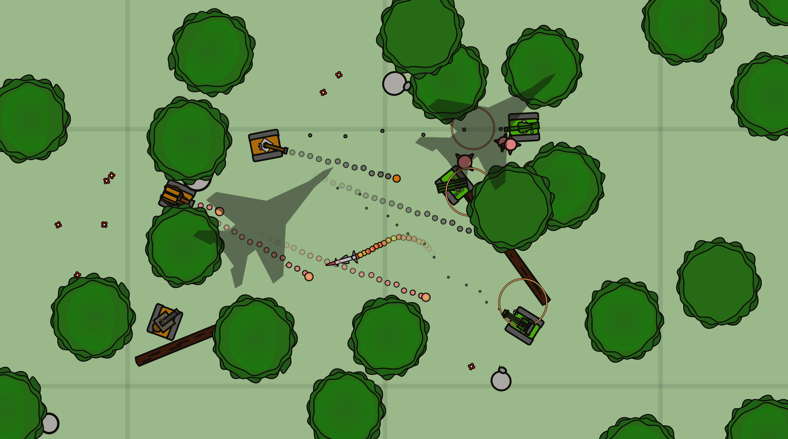
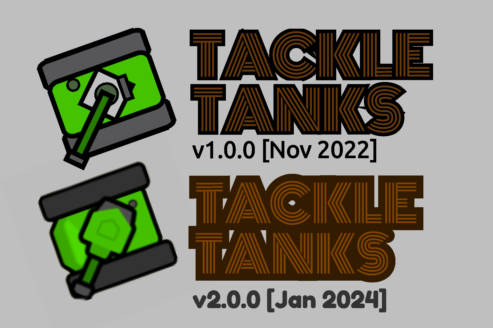
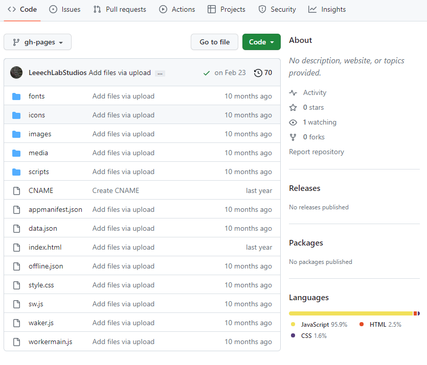

Official Game Guide
Last Updated: December 06, 2023
Welcome to Tackle Tanks!
This game is a multiplayer tank game created for causual players throughout the web. With a variety of gamemodes (Team Deathmatch[25] being the most popular) and tank classes to choose from, players are able to enjoy competetive matches based on their own interest.
ADD IMAGE
HERE!!!!!!
From epic tank battles to team building missions, players are incentivized to work together to complete missions. Rewards, given at the end of a match, are based on your team's completion and your own personal contributions, based on the XP Merit System[9]. With these rewards you can buy a multitude of cosmetics from shop.
History and Origins
The first version of this game started on MIT's Scratch, created by the user Rboombox. This version has only campaign missions; there is no multiplayer mode available. Being the basis of Tackle Tanks, there are no abilities or powerups in this version. The game is still playable as of now. Click here to play this version!
Rboombox, inspired by other .io games on the internet, decided to use the idea of his scratch project and create TackleTanks.io. This game was created using Javascript, HTML5, and CSS. Version 1 was completed November 2022. This multiplayer version contained multiple updates, such as two abilities for each tank (some powerups are the same with this version). There were also updated guns and machinery, updated maps and objects, and the implemation of shop. This version of Tackle Tanks could be played anywehre on the web.
This version is no longer availiable. Older versions of Tackle Tanks are overwritten by the newest version.
In this new update -- Tackle Tanks v2 as of January 2024 -- there are major improvements. Most of the art and style of the game is upgraded, as well as the abilities and weaponary of each tanks. The main problem of the old version was how laggy and slow it ran. This version runs smoother and can handle more objects!
Other updates include: new gamemodes, more skins, upgraded scoring system, better effects and particles, better options/settings, ect. This game guide is another advancement as well. If you are trying to find any information about how something works, search it up in this game guide--you are sure to find it!
Github and Programs

Since we are all for transparency, you can see all of the scripts and
programs that will run on your browser as you're playing the game. To
check this out,
click this link. This is posted on Github.
If you find errors/bugs or you have a suggestion for the game, submit
a statement in the Issue category. You'll have to create an account in
order to do this.
We do not care if you try to make a modded game. Some of the scripts
that runs the server connection, like
c3runtime.js, may help you in your journey. We don't know how you'll accomplish
this, but remember that we do not have any part of your creations.
Maybe in the future we will create a program to assist in creating
mods (This hasn't change as of right now). If you are successful
creating a modded server, we encorage you to share how you did this
with the world.
Server Options
This section of the guide will recapuliate each function of a server.
In order to join a game, click play, scroll through the game list, and
then join the game. In order to host a game, click play and then host
a game. This will lead you to a page of game options, titled "Host A
Game". Make sure your device can handle multiple calculations and
rendering if you do this. Low-end processers may result in lag for you
and your players. Also, to clarify most misconceptions, hosting a
server is FREE.
The first thing that appears is the map options. In order to change
how people can select the next map, select "Change of Map". "Map vote"
means that after a game, your players can vote on the next map (this
poll is open for 30 seconds). Random means that the next map will be
arbitrary. The rest of the options means that the map is always
constant (Ex: If you select "Grasslands Only", the map will stay as
Grasslands until the host leaves). If you select these options, you
will not be able to change the "Starting Map". Otherwise, if you click
"Starting Map", this will change the first map in your game.
In order to change the size of the field, click on "Map
Size". The options, Small, Medium, and Large, are exactly what they
represent.
IMPORTANT: Some server options may be immutable based on certain gamemodes! (Ex: If the gamemode "RC Race" is selected, the amount of players will change. If the gamemode "Mini Arena" is selected, the map size will change to Mini). Check out each gamemodes to see every limitation!
After the map segment there is a "Gamemode" segment. There are only
two options you can change here. The first option will change the
actual objectives and style of the game. To see each gamemode and
their rules, go to the
Gamemode[25]
guide.
The next option is "Time Limit". Exactly as it's
written, this represents the amount of time for each round. The
default is 15 minutes, but the maximum amount is an hour (the minimum:
1 minute).
The next segment is the "Tank" category. The
first option changes the number of players PER TEAM. This said, if the
number of players per team is 50, a maximum of 100 players can join
your server because there are two teams. The next option is titled
"Select your tank". It can ethier be disabled or enabled. Disabling
this will result in players receiving a randomly selected tank. If
enabled, players can choose their tank. They can only do this each
round though, changing the tank is not allowed during the match.
After
this, there is an option to desgniate what tanks are allowed in your
game (Titled, "Allowed Tanks"). By default, all of the tanks are
selected. You can unselect a tank be clicking on it, changing the
color to be gray. Gray obviously means it's unselected. If you think a
tank will not suit your needs, unselect it. At least one tank should
be selected.
The last option is "Automated Bots". You can
enable/disable if your game has bots. A bot will be destroyed after a
player has joined. If a player leaves, a bot will be created. Bots
will also even out a team. If disabled, there will be no bots at
all.
The very last segment is the "Advanced" section. The
first option is "Dedicated Server". This implies that, if enabled,
when you host the game, the game will automatically run until you end
it by clicking "End Server". In basic terms, if your computer is left
on for 24/7, your game will stay up and running. Even though it is
healthy for your computer to run 24/7, this may affect your internet
usage. Check your internet provider to see if running this will stay
in your price range. Otherwise, just disable this. It's really
unnecessary, but it's an option you can select.
Lastly, the
final option for hosting the game is the "Public/Private Game"
selection. If public, anybody can find your game and join it. If
private, the only way to enter the game is if you have a code or url.
If you select "Private", invite all your friends by sending them the
link.
After you decided on all of these options, tap "Host
Game", and the server will start. Remember that creating a server will
run programs, manifesting multiple calculations every second. This
game is designed for average computers, so even though you might not
have the best PC, you can still make a game and play with your
friends.
Settings and Each Function
Just like the "Server Options" part above, this is a recapulation of
each Settings. To change how your game works in Settings, click the
setting symbol located on the top right corner of the home page. This
will bring you to a page labeled "Settings". There are a number of
settings to change, so modify each option to create the best gameplay
possible.
The first segment on this page is titled
"Gameplay". The first option enables or disables Screen Shake. As the
name implies, your screen will shake or rumble when you are near an
explosion (Ex: Let's say you are underneath an airstrike. Your screen
will shake like crazy!). Disable it in order to get rid of this. The
next option is titled "Dim Flashbang". When you are flashbanged by a
Sniper[21], your whole screen turns stark white. This might result in temporary
blindness and damage to the retinas if you are playing in a dark room.
When you enable "Dim Flashbang" this will change the flashbanged
effect to become black instead of white, saving your eyes!
The
next option is "Anonymized Usernames". As the name implies, you will
play against friendly default names (Ex: "BraveOperator", or
"UsefulTank"). This will aslo disable kill feed. This is automatically
set to disabled, so you might see inappropriate names. The final
option for the Gameplay section is "SFX Volume". This changes the
volume for all sounds in the game.
The next section is titled "Key Bindings". To change a key for any
action, click on the action's button and press a key. If you press the
escape key or a key that already exists for another action, the key
will not change. You cannot set the keybinds to Escape or the Arrow
keys.
The first four keybinds of the settings is "Move Up",
"Left", "Right", and "Down". The WASD keys are the defualted for the
movement of your tank. Also, the arrow keys are constant for moving
the tank. So regardless of what keybinds you use for movment, you can
always rely on moving your tank with the arrow key pad.
The
next keybind is "Alternate Shooting". The name implies that there is a
main button used for shooting. This is the left mouse button, which is
constant. Some tank' powerups (Like
Heavy's[16] Grenade Laucnher) or main
gun (Like Sniper's[21] gun) allows
you to aim when you click the right mouse button. This is constant as
well.
The next button is "Reverse". This button, when held, will move the
tank backwards. So if you move your tank and press the reverse key,
you still move in the correct direction, it is just the back of your
tank that faces the direction. This is helpful in some cases,
especially for Cannon's[10] Riot
Sheild ability. The default for this key is Shift.
The next
to keybindings you can edit is "Activate Left or Right Ability".
Naturally Q and E, these button activates the ability your tank has.
If you activated the ability, and press the same key again, it
deactivates the ability. Deactivating before the main cooldown of that
ability may result in less cooldown.
The next ability is
"Detonate", which is defaulted to the X key. This is meant for certain
gadgets your tank might have. For instance if you are a
Mechanic[12] tank and you activate
your RC Car ability, you can explode your car early by holding the
detonate key.
The next bind you can edit is the "Show/Hide
Chat" key. This key, as implied, shows or hides the chat if clicked,
and the default is T. To add on to that, the next keybind allows you
to chat. This key is naturally ENTER. In order to actually message
people, you first tap this key, then type whatever message, and then
press ENTER. Regardless of what key you set this to, ENTER will
ultimately send the message.
Messaging in Chat is global! There is no team chat. Make sure you don't inform the enemy about your whereabouts.
The last keybind is "Show/Hide Scoreboard and Menu". As the name
implies, this key when clicked will show the scoreboard and other menu
options. This key by default is TAB.
Finally, the last
section in the Settings page is "Advanced". Here, there are some
settings people normally don't look for. The first option is to show
FPS and Ping. FPS is basically the refresh rate your computer runs. An
avergae computer might run at 60 Frames Per Second, but if something
that causes your computer to lag (like high CPU usage from this game,
or some internet troubles), your FPS will decrease. You will notice
this naturally when you see lag. Ping (the technical term is latency)
means the time it takes for data to be tansmitted from your device to
the server. When you join a game in Tackle Tanks, if the Host lives
somewhere very far from you, laggines will show up. If you enable FPS
and Ping, you can see how much time data reaches your server and back.
20 m/s or less is very great ping. 100m/s or more is bad ping. If you
are a host, your ping is 0 m/s, because you are the connector.
The
next two options is "Effects" and "Particles". There are various
effects in Tackle Tanks. For example, when you see fire in the game,
you visibly see orange flames stretching and dilating. This motion is
caused by an effect by our software. Particles on the hand, are
objects you see. When you are in any of the maps, you will see
flowers. These flowers is a particle. Particles have no collision, but
it takes space, making the CPU usage to rise. More CPU usage means
more lag. If your computer can't handle these particles and effects,
disable both of these.
"Object Limiter" is the next option.
Here, you can set the number of objects in your game. Trees, rocks,
anything with collision, are mandatory objects. Since there around
1000 mandatory objects in any given game, this is set as the minimum
number. If you enter a number below this, it will set it to 0, meaning
there is no limit. The maximum is 2000 because it is not possible for
this game to have anymore than 2000 objects at a time. Some objects
might not disapear if you are host.
Lastly, the final
option is the red warning button. This is asking to clear ALL of your
user data. There is no going back if you click this option. All your
skins, stats, even your settings, will disappear. Your progress will
be reset. Don't worry, if you accidentally click this, another warning
prompt will appear. Here you can click cancel.
After editting and modifying everything to suit you needs, scroll at
the very top of the page. Here, you can click "Save". Do not click out
of the page because it will not save. There is another button titled
"Reset to Default". As the name implies, if you click it, it will
reset all of settings, returning everything to the default.
Gameplay
The mechanics of this game is very simple, allowing all players to
enjoy. Each user is a tank. You can control the tank by moving up,
down left, or right (default is WASD, arrow keys are constant). You
can aim and fire using your gun or ability (Default is left mouse to
shoot and right mouse to aim, Space is constant). Every tank has a
main weapon and two secondary abilities. There are limits. Gun Cool is
a varible that affects your firing. Each tank afflict this variable at
different speeds. For example, the
Sniper Tank[21] can only fire three
times back to back until the gun heat disallows you to shoot. The gun
will have to fully cool in order to shoot again.
The
abilities have limits as well. Every ability will have timer based on
how powerful they are. For example,
Recon's Airstrike[20] has a cooldown
of 120 seconds before it can be used again. This is because the
airstike is massive and has devestating effect. Each tank has at least
one defensive and one offensive ability.
The baseline
integrity for all tanks is 1000hp. In order to fully destroy a tank,
you must deplete their health. There are two types of damage,
Explosive damage and Impact damage. Impact damage is the damage caused
by collision of a projectile (For example,
Cannon's cannonball[10] damages when
it collides against a tank). Explosive damage, as the name suggest, is
damage caused by explosions, an area effect, contrary to impact. If a
kerosene can blows up, it causes damage over a short period of time
(the longer the tank collides with the explosion, the more damage the
tank recieves). Explosive damage, decreases the farther away you are
from the explosion. Impact damage is constant.
After each
match, you are rewarded Scraps (in-game currency) based on what you
did on the battlefeild. Even though you might have lost the match, you
will be rewarded. During the game you can find your stats by pressing
the Leaderboard button in the bottom right corner.
To save your scraps, make sure you click the leave button. Anything else (reloading, back page, ect) will result in a loss of your hard earned rewards. Scraps are automatically saved after each match.
The scraps you earn can be used to buy different skins. These skins are located back on the main page in the tope left corner. Here you can also find the amount of Scraps. Once you click the shop button, you will land on the shop page, where you can select the skins you want to equip and buy skins if you have enough Scraps.
Basic User Interface and HUD
This section will give you all the information about the basic user
interfaces. The UI that are purposed for a certain gamemode, like
Capture The Bases's Base Information[26], will be explained in the Gamemodes category. Any other general
interface will be explained here.
The first and most
prominent design you might find is the health and gun cool indicators.
The health bar, as named, tells you the total integrity of your tank.
Another indication of your health would be the damage indicated on
your tank. Your gun temperature is marked by the red gauge. The higher
the temperature, the more it reaches the end point. If the end point
is reached. A red LED will flash on, indicating that you can no longer
fire.
Just above the health bar is two abilities. Both
abilities can be clicked to activate it (or re-clicked to cancel).
After the ability is used, the button will turn dark and display the
time it takes until you can activate it again.
The next
interface can be seen in the top left. Here, you will find the current
objective and the time until the match ends. Below the time you will
see the current Tackle Leader. The Tackle Leader tally will be shown
based on gamemode (For example,
Team Deathmatch's[25] Tackle
Leader is based the amount of XP you earn).
In the top
right corner you will find the kill feed. If you destroy another
player, it'll show here. If you accidently destroy yourself in any
case, it will also show up in the Kill Feed. If you are destroyed, you
will land on the spectate page. Here you'll find the current person
you're watching and arrows to change who you want to watch. You can
see their current gun cool and integrity (in the place where yours
would be). After 10 seconds, you can click the respawn button to
respawn (if there is respawn in the gamemode you are playing).
In certain cases, you can controll a gadget. Each gadget that you can
control will have ethier have "Detonate" button or a Recall "button".
Just as the name suggests, you can click this button (or press the
default key "X") to detonate or call back your gadget. You will not be
able to see your integrity, guncool, or powerups during this time.
Finally, each tank has their own cursor. This cursor will always face
the direction you would want to fire. Make sure that you nozzle is in
the direction to fire before you do shoot. Every tank has a rotate
speed for their turret. It takes about 1.25 seconds for your nozzle to
turn 180 degrees.
There are other small and minor UI, such as the pop up to select your
tank, but it's very self explanitory.
Targeting and Ping System
Targeting enemies is another key factor in this game. Certain power
ups, passive abilities, and gadgets have the ability to ping an enemy
tanker (for example,
Scout's UAV[19] pings enemies as you
fly over them).
If someone pings an enemy, everyone on their team will be able to see
the ping. In order to see the ping, there are arrows that point to the
enemy on your screen (there is a radius around your tank that provides
pointers). An enemy will not know that they are pinged, nor their
team. This goes for your team as well: everyone in your team are
vulnerable of being targeted without them even knowing it.
If you target an enemy, the ping's heighlight will not last forever.
It will disapear after about 5 seconds.
There are other
pointers that are not targeted enemies. Yellow arrows are created by
Recon's Move Marker[20], which points you in the general direction of where most of the
enemy team is (or whatever your fellow Recon targeted).
Capture The Bases[26] also
displays pointers. A team colored arrow (green or orange) will point
towards a base. The greener it is, the more the Green Team captured
the base, the more orange, the Orange Team. The more white the arrow,
the more neutral the base is.
XP Merit and Scoring System
XP, also known as your score, is earned by doing various actions that
will propel you to team victory. There is no way to lose XP, you can
only be reward. The more XP you earn, the more Scraps you earn. In
most game modes, Tackle Leader is based on someone who earns the most
XP. At the end of a match, you are reward scraps based on the team win
ratings, how much XP you earned, and the placement you are in. if you
are first place in rank, you are reward more Scraps. So generally,
build your score by doing stuff!
You are given different amounts of XP for different actions. Here, a
list will show you how much for each action:
Eliminating an Oppenent - 1000xp
5 HP worth of Damage - 4xp
(Continuous adding for each damage)
Spot Assist - 25xp
Gadget
Destroy - 25xp